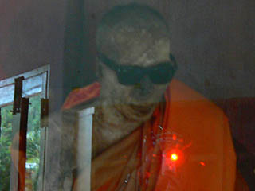

ワット
クナラム/サムイ島,スラターニー県
WatKunaram/KoSamui,SuratThani
ジープに乗った荒くれ者サファリツアー一行はミイラの寺に行くという。
おっ、ミイラ寺ですか。いいっすねえ。
向かったのは島の南部にあるワットクナラム。
小さな寺だが大勢の観光客が来ていた。あ、これ全部ウチのツアーの人達か。
本堂は最近出来た風のこじんまりとした建物。しかし本堂には誰も行かず、手前のお堂に向かう。
小さなお堂の中央に件の即身仏が祭られている。
タイでも即身仏が幾つかあるようだが、日本同様、あまりミイラを加工しないようだ。
これが中国だったら金箔を貼りまくって金ぴか仏像みたいになっちゃってるのだが。
この即身仏さん、phra kuru
samathakittikhunといい、もともとこの寺の住職だった。
1894年生まれのこのお方、1944年、50才の時に出家し、それ以降僧侶として尊敬を集めていたそうだ。
1973年に79才で亡くなると、遺言によってこのお堂に祭られたという。
高温多湿のタイでミイラ化するのはかなりレアケースだと思うのだが、比較的キレイなミイラだと思う。
恐らくミイラの前にある金ぴかの人が本人の生前の姿だったのだろう。

おっ、心臓が光ってるぞ！
次の修行場へ
泰国珍寺武者修行
珍寺大道場 HOME